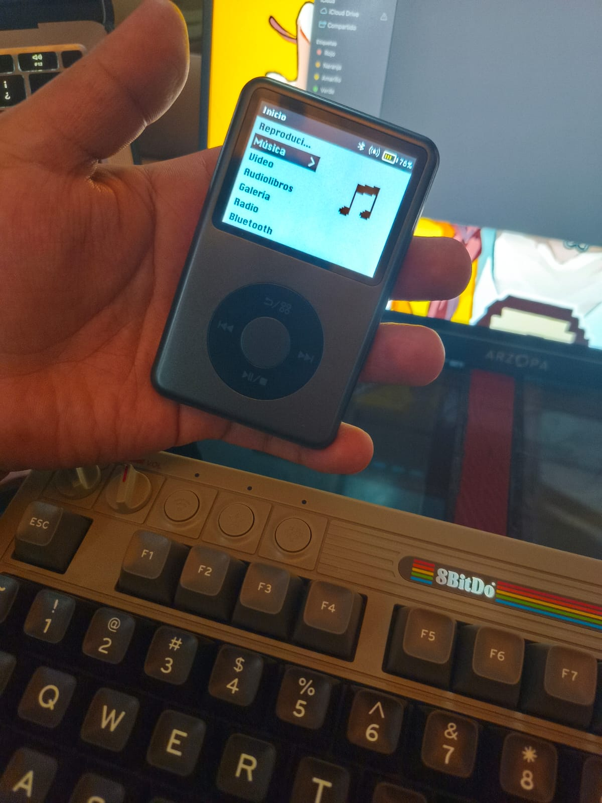
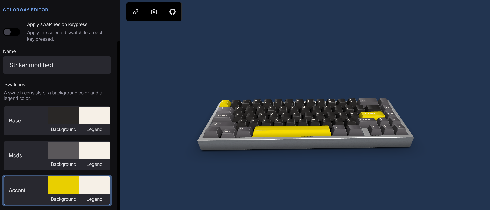

Welcome to the Matrix
root@OrangeSkull:~$
|
"De la Pasión al Código: Un Blog de Programación"
Mira nuestra galeria de stickers :
Stickers
Glosario de un Hacker para nuevos hackers
GLOSARIO
📚 Nuevo libro disponible en la Librería: TakeDown ha sido agregado. ¡Échale un vistazo!
Un poco sobre mi
Hola, soy un ex-estudiante de ingeniería en software. Desde que era niño, siempre me ha fascinado el mundo
de
la programación y la tecnología. A lo largo de mi carrera, he aprendido la importancia del software libre y
del aprendizaje continuo. Este blog es un espacio donde compartiré mis reflexiones, recursos y proyectos
sobre programación, así como mis experiencias personales. Espero inspirar a otros a seguir sus sueños en el
mundo tecnológico. ¡Gracias por visitar mi blog y unirte a este viaje!
El gadget que me recordó a la prepa: Innioasis Y1
root@OrangeSkull:~$
|
Fecha : 18/10/2025
¡Hola, piratas del teclado
Esta vez quiero hablarles de un gadget que me recordó a mis años de preparatoria. Antes de Spotify y Apple
Music, la mayoría descargábamos música de procedencia dudosa —o, en mi caso, comprábamos los discos piratas
en el tianguis, pasaba las canciones a mi laptop y de ahí a mi viejo iPod Classic.
Ese iPod fue un guerrero de grandes batallas: duró lo que tenía que durar. Por eso me animé a traer este
pequeño blog: el gadget del que hablo es el Innioasis Y1, un reproductor de música con la estética de un
iPod Classic.
Me llené de emoción cuando lo vi en una de esas tiendas en línea. No lo dudé: lo compré en un arrebato
consumista. ¿Por qué menciono esto en un blog dedicado al hacking y la programación? Porque la música es el
complemento del programador o hacker; no me imagino a alguien escribiendo líneas de código sin su playlist
sonando en los audífonos.
Les dejo una imagen del Innioasis Y1: lo recomiendo al 100 %.
En un próximo artículo les enseñaré cómo podemos usar programación para modificar alguno de sus temas y
personalizar la experiencia.
Saludos, piratas del teclado.

¬ø
ß
Una Disculpa
root@OrangeSkull:~$
|
Fecha : 10/10/25
Hola, piratas del teclado:
Este último mes no he podido escribir en el blog por temas laborales, pero esta semana volvemos a empezar.
¡Muchas gracias por leer este blog! Sigamos creciendo juntos.
Mecánica Oculta: Hackeando tu Propio Teclado
root@OrangeSkull:~$
|
Fecha : 15/08/2025
¡Hola, piratas del teclado
Si te apasionan los teclados mecánicos (y no le haces feo a los de membrana), esto te va a interesar.
Hoy quiero mostrarte una web que se ha vuelto imprescindible para cualquiera que quiera
personalizar su teclado:
Keyboard Simulator.
No es solo un simulador de keycaps, sino que te permite ver cómo se verá tu teclado terminado. Perfecto si
eres
Team 100% o como en Welcome to the Matrix, un orgulloso Team 60%.
Por ahora, te dejo uno que acabo de terminar.
Lástima que todavía no encuentro en mi país quién pueda fabricar los keycaps… 😅 (¡ayuda, por
favor!)

Cómo probar distintas distros de Linux sin arruinar tu PC en el proceso
root@OrangeSkull:~$
|
Fecha : 09/08/2025
¡Hola, piratas informáticos!
En esta ocasión vamos a hablar de una herramienta web única en su tipo.
Pero primero, pongamos algo de contexto:
¿qué es una distro de Linux?
Una distro (o distribución) de Linux es una versión del sistema operativo
que ha sido modificada para adaptarse a distintos gustos o necesidades.
Entre las más conocidas están:
- Ubuntu: lo más parecido a Windows, junto a Linux Mint.
- Parrot OS y Kali Linux: enfocadas en ciberseguridad.
- Arch Linux: para quienes disfrutan personalizar hasta el último detalle de su sistema.
Cuando estaba en la universidad, tuve una clase centrada en sistemas
operativos. Todos trabajaban en máquinas virtuales, porque así lo
pedía el profesor. Pero yo, de aventurero, decidí hacerlo en
dual boot: dos sistemas operativos instalados en mi PC, uno con
Windows y otro con Ubuntu.
Ahí fue cuando me enamoré de Linux. Me sentía un verdadero hacker
escribiendo en la terminal. Así que quise probar más distros: pasé de
Ubuntu a Kali, luego a Mint, cambié escritorios y jugué con varias
configuraciones.
El problema es que cada vez tenía que instalar el sistema operativo desde
cero en mi máquina, y mínimo me tomaba 2 horas. Eso me limitaba bastante.
La solución: DistroSea
Pero hoy les traigo la solución a ese problema: la página
web DistroSea.
Esta aplicación web permite probar sistemas operativos Linux en
servidores de la propia página, sin necesidad de instalar nada en
tu PC. Es, para mí, una obra de arte para los que disfrutamos experimentar
con distintas distribuciones.
Eso sí, como es gratis, a veces hay que esperar un poco para que haya
servidores disponibles. La espera es corta, pero vale la pena.
Conclusión
Así que anímense a probar Linux y a dejar atrás el software privativo.
Como dice uno de mis programadores favoritos, Richard Stallman
(o San iGNUcio, como bromeamos en el mundo Linux):
“Libérate de los grilletes digitales del software privativo.”
Nos vemos en el siguiente artículo.
¿La mejor página para hackers de sombrero blanco... y negro?
root@OrangeSkull:~$
|
Fecha : 01
/08/2025
Contenido :
Hola, piratas del teclado:
Navegando por la red en busca de un libro para compartir en la sección de la Biblioteca de la
Resistencia
—específicamente el de Kevin Mitnick, "Cómo ser invisible"— me topé con algo mucho más grande.
Encontré una página con una librería digital cargada de conocimiento hacker: libros que
jamás había visto,
documentación valiosa, guías de programación, y... cof cof, cómo crear un ransomware (para fines
educativos, claro está).
Welcome to the Matrix se desblinda del uso que se le pueda dar , m
¿Qué pueden hacer con esa información? Bueno, eso depende de ustedes jeje. Pero lo que sí les digo es que es
una biblioteca digital muy completa, y como siempre digo: la información se comparte,
eso es ser hacker.
Hoy les comparto esta joya. El link de la página es: LINK. Para mí, ha sido un
descubrimiento enorme y ya tengo varios libros en la mira.
Recuerda: ¡el conocimiento se comparte!
El mejor teclado para programar... ¿Existe?
root@OrangeSkull:~$
|
Fecha : 26/07/2025
Contenido :
Hola, piratas del teclado:
La semana pasada no pude subir entrada al blog por razones que les contaré en otra publicación
(spoiler: impresión 3D en el mundo hacker). Pero esta semana les quiero hablar sobre
mi teclado, el que uso actualmente y que ha llamado la atención de varios:
el teclado del admin de Welcome to the Matrix.
¿Qué teclado estoy usando?
Estoy usando un Corne v4, personalizado con switches
Outemu Red y keycaps inspiradas en Evangelion.
Este teclado lo mandé a hacer con un creador de teclados Corne que encontré en Instagram.
Una verdadera joya artesanal.
Llevo ya unos 15 días usándolo casi a diario, y aunque por temas de trabajo
aún no puedo usarlo del todo en mi entorno laboral, poco a poco me voy adaptando.
Es una curva de aprendizaje interesante, más amplia de lo que pensé, pero no me desanimo:
quiero convertirlo en mi teclado principal y sé que lo lograré.
¿Por qué me gusta tanto?
Para los jóvenes hackers que estén pensando en armarse uno, les dejo al final el link donde lo compré.
Pero desde ya les digo algo con un poco de envidia hacia mi yo del pasado:
me hubiera encantado aprender a programar con un teclado como este.
Ahora que tengo más experiencia, siento que podría exprimir todo su potencial,
y aunque aún no lo domino del todo, estoy seguro de que en algún momento lo sabré explotar al
máximo.
¿Qué tiene de especial un teclado tipo Corne?
Los teclados tipo Corne son split (divididos en dos mitades)
y funcionan con un sistema de capas. Esto significa que una misma tecla puede tener
varias funciones. Por ejemplo, la tecla W no solo puede escribir la letra “w”,
también puede servir como tecla de navegación, función especial o incluso como modificador,
dependiendo de la capa en la que estés.
Esto te da muchas ventajas al programar: puedes acceder a símbolos, combinaciones, comandos y accesos
directos
de forma mucho más rápida y ergonómica, sin mover tanto las manos.
En resumen
Este teclado Corne v4 es una herramienta poderosa, especialmente para quienes
pasamos horas frente al código. No es para todos, requiere paciencia y adaptación, pero si te gustan los
retos
y quieres llevar tu experiencia al siguiente nivel, definitivamente vale la pena.
Y recuerda: el teclado no te hace hacker, pero sí puede hacer que hackear sea mucho más placentero.
CREADOR : Instagram
VITA : Personaliza las capas de tu teclado
¿Por qué el teclado es el cincel del programador?
root@OrangeSkull:~$
|
Fecha: 18/07/2025
Hola, pirata del teclado
Siempre he dicho que hay que romantizar lo que hacemos, pero no romantizar la carrera.
Te explico por qué:
Muchos de nosotros, al entrar a la carrera, pensábamos que sería muy diferente. Imaginábamos estar
frente a una pantalla todo el día programando o, por qué no, hackeando la NASA. Pero la realidad al
principio
es otra: matemáticas, estructuras, algoritmos (que ojo, son importantes, no me malinterpretes).
Con el tiempo te das cuenta que el aprendizaje no se limita al salón de clases. Está en los tutoriales de
internet,
en los libros, los foros, los documentales. En el lore que rodea nuestra cultura como
programadores.
Así como un pintor tiene su pincel, o un escultor su cincel, nosotros tenemos nuestro teclado.
Y no el mouse, porque los verdaderos programadores y hackers casi no lo usamos (ya lo
entenderás después).
Nuestro teclado es la herramienta con la que esculpimos nuestras ideas. Línea a línea, función a función,
creamos software, soluciones, arte digital.
Mi herramienta favorita
Yo uso un Corne V4 con keycaps de Evangelion: una belleza. Tiene esa vibra hacker,
es cómodo, ergonómico, y perfecto para escribir horas y horas sin parar.
Consejo final para el nuevo hacker
Si estás comenzando este camino, busca un teclado que te haga sentir cómodo.
Vuélvete autodidacta, aprende a amar lo que haces, y elige bien tus herramientas.
Porque al final, cada línea de código es un golpe de cincel sobre el mármol digital.
Y tú, programador, eres el escultor.
Cuando la Máquina Piensa, ¿Tú Dejas de Pensar? Reflexiones de un Pirata del Teclado
root@OrangeSkull:~$
|
📅 Fecha: 7/06/2025
Hola, Pirata del Teclado
En esta era, las IAs como ChatGPT o Gemini han revolucionado la forma en
que usamos la tecnología.
Ahora, buscar en Google es cosa de "viejitos" —no me quiero imaginar lo que pensarán los jóvenes de
hoy cuando escuchan que nosotros hacíamos las tareas con El Rincón del Vago o sacábamos cosas
directo de Wikipedia.
Lo que no se puede negar es que la IA es una gran ayuda para nosotros, los
programadores.
Facilita la vida... pero si usas la IA para que ella programe por ti y tú no haces nada, ahí está el
problema.
Cuando estaba en la universidad —más o menos a la mitad de la carrera— fue cuando aparecieron con fuerza las
IAs como ChatGPT o Bard (antes de que le cambiaran el nombre a Gemini).
Fue un ¡boom!
Veía a mis compañeros entregar todas sus tareas hechas con IA, y yo pensaba:
¿Entonces para qué estudiamos esta carrera si todo lo hace una IA?
Y ahí me llegó la iluminación:
¿Y si usamos la IA para estudiar mejor, en lugar de que lo haga todo por nosotros?
Recuerdo que una profesora (no diré nombres) nos dejó una tarea de reproducir sonidos con Java.
Busqué en YouTube y otras páginas, pero todo era confuso. Al final, terminé comprando un libro viejo de Java
(creo que era del JDK 7), y ahí encontré justo el enfoque que la profesora esperaba.
Ahí aprendí algo importante: investigar es bueno.
Pero imagina que tuvieras un profesor disponible 24/7.
Antes eso costaba dinero con clases particulares; ahora, basta con abrir tu celular o computadora y
aprender de una IA.
Esa es la verdadera fortaleza: usar la IA con conciencia.
La IA no necesita aprender.
Quien necesita aprender eres tú, querido lector apasionado de la programación.
Entonces, si quieres mejorar como programador: ¡programa!
Usa la IA como maestro, no como esclavo que hace la tarea mientras tú te rascas el
ombligo.
El Manifiesto Hacker
root@OrangeSkull:~$
|
Fecha: 31/05/2025
¿Qué es el Manifiesto Hacker?
Todos amamos a los hackers, o al menos esa subcultura que representa la rebeldía creativa,
la curiosidad infinita y el deseo de entender cómo funciona el mundo digital.
En mi caso, esa fue la razón por la que decidí estudiar esta carrera.
Y cada vez que me siento desmotivado para programar, me gusta ver una película con temática hacker
(como *Hackers* de 1995) o releer algunos textos que me recuerdan por qué empecé.
Uno de esos textos es el **Manifiesto Hacker**, también conocido como
*"The Conscience of a Hacker"*. Fue escrito en 1986 por **Loyd Blankenship**, alias **The Mentor**,
tras ser arrestado por sus actividades como hacker. En lugar de hundirse, escribió esta especie de carta
abierta
para explicar al mundo lo que realmente mueve a un hacker.
Este manifiesto no promueve el delito ni la destrucción. Es una reflexión poderosa, casi poética,
sobre el deseo de aprender, la pasión por el conocimiento, y la frustración de ser juzgado por pensar
diferente.
Para mí, y para muchos desarrolladores, sigue siendo una fuente de inspiración y un recordatorio de que
programar no solo es técnica: es filosofía, es ética, es identidad.
“The Conscience of a Hacker” — por The Mentor (1986)
Otro que ha sido atrapado hoy. Es toda una tragedia.
¿Lo has visto? En su computadora. ¿Sabes qué estaba haciendo?
Explorando. Aprendiendo. Jugando con el sistema. Buscando conocimiento.
Somos los exploradores del mundo digital. Nos juzgan sin comprendernos.
Nos llaman criminales, pero nuestro crimen es la curiosidad.
Aprendimos a leer porque queríamos saber. Aprendimos a programar porque queríamos crear.
Mientras ustedes juegan con reglas impuestas por un sistema que ni entienden ni controlan,
nosotros vemos el mundo de otra forma. Un mundo sin fronteras.
Un mundo donde lo que importa no es la apariencia, el dinero o el estatus.
Solo el conocimiento.
Somos los hackers. Y este es nuestro manifiesto.
Puedes detener a uno, pero no puedes detenernos a todos.
Manifiesto Hacker
Lamento no haber actualizado este blog recientemente.
root@OrangeSkull:~$
|
Fecha : 22/05/2025
Hola
Sé que ha pasado mucho tiempo desde la última vez que escribí, pero quiero que sepan que este blog significa
mucho para mí.
No quiero dejarlo morir como un proyecto más que se abandona. Mi deseo es que crezca, que llegue lejos, y
que sirva como una guía para nuevos programadores que están comenzando su camino.
Si alguno de los consejos que comparto aquí logra ayudar, aunque sea un poco, a alguien que está aprendiendo
a programar, me sentiré muy satisfecho.
Esa es mi meta: compartir lo que sé para hacerle el camino un poco más fácil a otros.
Gracias de antemano por tomarte el tiempo de leer este blog. Espero que lo disfrutes tanto como yo disfruto
escribirlo.
Creacion de este Blog
root@OrangeSkull:~$
|
Fecha : 07/10/2024
Titulo :
Estoy emocionado con la creación de este blog. Siempre me llamó la atención crear uno desde que estudiaba la
carrera. A la fecha de hoy, que ya he terminado la carrera (desde el corazón, siempre seré estudiante), por
distintas cosas nunca lo pude hacer. En este blog trataré de documentar mi vida y tratar de subir uno que
otro libro sobre programación que encuentro en Internet.
Espero disfrutes leerlo como yo al hacerlo
Carta hacia un nuevo Programador
root@OrangeSkull:~$
|
Fecha : 07/10/2024
Contenido :
Durante mis años de carrera, muchas veces me hice la pregunta de por qué estudiaba ingeniería en software.
Muchas dudas pasaban por mi mente:
- ¿De verdad soy bueno en esto?
- ¿Podré vivir de esta profesión?
- ¿Soy capaz de cumplir con mis propias expectativas?
Muchas de esas preguntas me atormentaron a la mitad de la carrera, y siento que todas eran justificadas.
Sentía que no estaba dando lo mejor de mí.
Ahora, a 6 meses de haber concluido mi estadía en la universidad, creo que tengo una respuesta para esas
preguntas que rondaban mi cabeza.
Después de reflexionar durante este tiempo, me di cuenta de algo muy importante: la clave no está en saber
si soy perfecto o si tengo todas las respuestas desde el principio, sino en la constancia, en las ganas de
aprender y mejorar cada día.
La carrera de ingeniería en software, como cualquier otro campo, no es una línea recta; está llena de
desafíos, errores y aprendizajes. Lo que verdaderamente importa es cómo enfrentas esos momentos. No se trata
solo de ser bueno de inmediato, sino de ser mejor que ayer.
Con el tiempo, comprendí que las expectativas que tenía de mí mismo eran solo una parte del viaje. Hoy sé
que cada pequeño paso que das, cada proyecto que terminas y cada problema que logras resolver te va
acercando a tus metas.
Si algo he aprendido, es que las dudas son parte del proceso, pero nunca deben ser un obstáculo para seguir
adelante. Si amas lo que haces y te apasiona la tecnología, el esfuerzo y la dedicación te llevarán más
lejos de lo que imaginas.
Mi consejo para ti, que estás iniciando o continuando este camino, es que sigas adelante, que te equivoques
sin miedo y que aprendas de cada experiencia. La carrera no termina cuando recibes tu título, sino que
apenas comienza. El mundo del software es vasto y lleno de oportunidades. Siempre habrá algo nuevo que
aprender, y eso es lo que hace que esta profesión sea tan emocionante.
Así que sigue adelante, no dejes que las dudas te detengan. La recompensa llega a quienes perseveran y
buscan ser mejores
Mi Mas Grande Error
root@OrangeSkull:~$
|
Fecha : 10/10/2024
Contenido :
En este artículo quiero contarles sobre algunos errores que cometí durante mi carrera, esos que, cuando la
terminas, te da un poco de pena haberlos cometido.
Es normal cometer errores, después de todo, somos humanos. Pero si alguno de estos errores puedes evitarlos
en el transcurso de tu carrera, ¡mucho mejor! Y en un futuro, cuando termines, ayuda a la siguiente
generación de programadores a no caer en los mismos errores.
Uno de mis principales errores fue no especializarme en algo.
Déjame explicarte: la tecnología es tan vasta que, si quisiéramos estudiar todo lo relacionado con la
programación, no tendríamos suficiente tiempo en nuestra vida para aprenderlo todo.
Como cualquier aficionado a la programación, nos gusta probar cosas nuevas, especialmente aquellas
tecnologías que están de moda o simplemente nos llaman la atención. No está mal probar cosas nuevas, el
problema surge cuando no profundizamos en ellas o no las explotamos al máximo.
Mi error fue exactamente ese: probaba muchas tecnologías, pero luego las dejaba de lado sin realmente
profundizar en ellas. Por ejemplo, mi primer empleo lo conseguí gracias a que sabía algo de Java, pero solo
tenía conocimientos básicos. Eso me obligó a volver a estudiarlo y profundizar en él cuando ya estaba en el
trabajo.
Está bien probar distintas tecnologías: móviles, web, frameworks... lo que te guste. Pero una vez encuentres
algo que realmente te apasione, ¡explótalo al máximo! Vuélvete un experto en esa tecnología. Esto me
recuerda mucho a una cita de Bruce Lee que aplica muy bien a este contexto:
"Temo más a un hombre que ha practicado una sola patada 10,000 veces que a uno que ha practicado 10,000
patadas diferentes."
Mis primeros pasos en el mundo de la IA
root@OrangeSkull:~$
|
Fecha : 21 de noviembre de 2024
¡Hola a todos! Sé que he estado ausente por un tiempo, pero he tenido mucho en qué pensar. Hace un mes
comencé a trabajar en una gran empresa del sector tecnológico, y aunque estoy muy emocionado por esta nueva
etapa, también he enfrentado algunos desafíos.
Para empezar, me han asignado a un área completamente nueva para mí: la inteligencia artificial. Como
comprenderán, esto significa una curva de aprendizaje bastante pronunciada. Además, estoy en un periodo de
prueba de tres meses, así que quiero aprovechar al máximo esta oportunidad para demostrar mis habilidades y
conocimientos.
Sé que muchos de ustedes están estudiando programación y se preguntan cómo destacar en un nuevo empleo. Mi
consejo es simple: ¡sean proactivos! Ofrezcan su ayuda en cualquier tarea, demuestren interés por aprender y
mantengan una actitud positiva. Recuerden que la humildad y las ganas de mejorar son cualidades muy
valoradas en cualquier entorno laboral.
En esta empresa he conocido a profesionales sumamente talentosos y con una gran experiencia en el campo de
la IA. En lugar de sentirme intimidado, he decidido aprovechar esta oportunidad para aprender de ellos y
crecer como profesional.
Para finalizar, quiero animarlos a que no se rindan ante los desafíos que puedan encontrar en su carrera.
Cada nuevo trabajo es una oportunidad para aprender y desarrollarse. ¡Sigamos aprendiendo juntos!